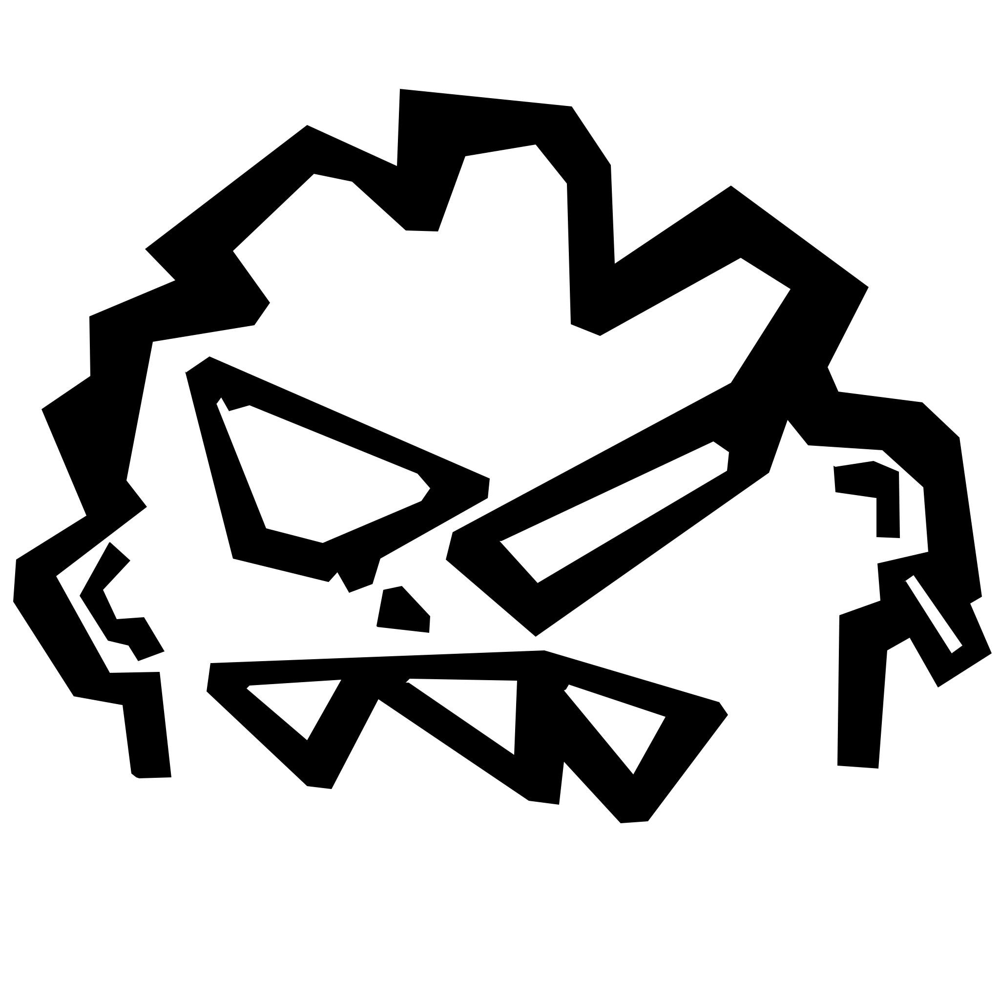

I am a graphic designer with experience in Adobe InDesign, Illustrator, Photoshop, and the 3D software Blender. I see graphic design as a tool for communication my goal is to create original and functional visual solutions that engage and convey a clear message. Creativity is at the core of my work ,I enjoy blending different styles and approaches to achieve unique results. I specialize in visual identities, logos, animations, 3D models, pictograms, and other essential graphic elements that bring a brand or project to life. My work focuses on connecting aesthetics with functionality, producing visuals that not only look great but also effectively communicate.